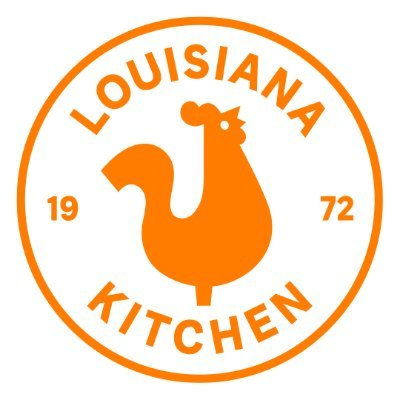

Popeyes
Home
History
Logo/Stats
Dishes
Services
About
Contact
Founding
(1972)
Al Copeland opens the first Popeyes restaurant, introducing flavorful and spicy fried chicken to the world.
Expansion
(1980s-1990s)
Popeyes rapidly grows, spreading across the United States and expanding internationally, captivating taste buds worldwide.
Acquisition
(2017)
Restaurant Brands International (RBI) acquires Popeyes, providing resources for further growth and innovation.
Continued Success
(Present)
Popeyes continues to thrive, introducing new menu items and delighting customers with its bold and delicious Louisiana-inspired cuisine.